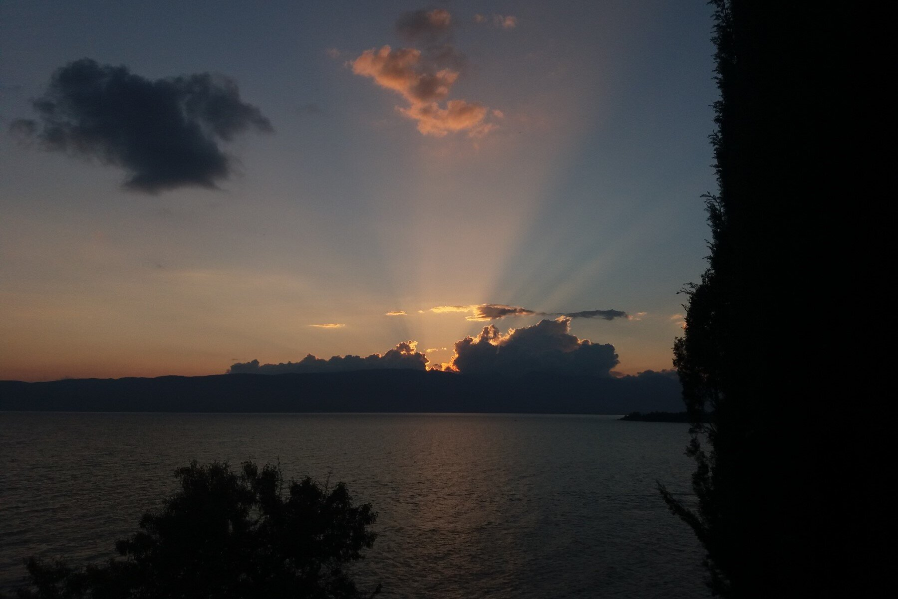
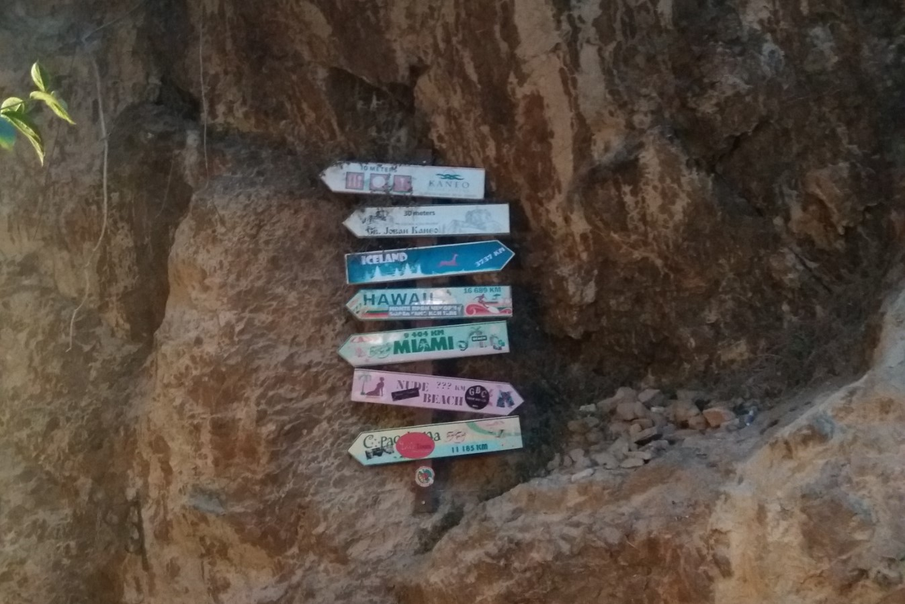
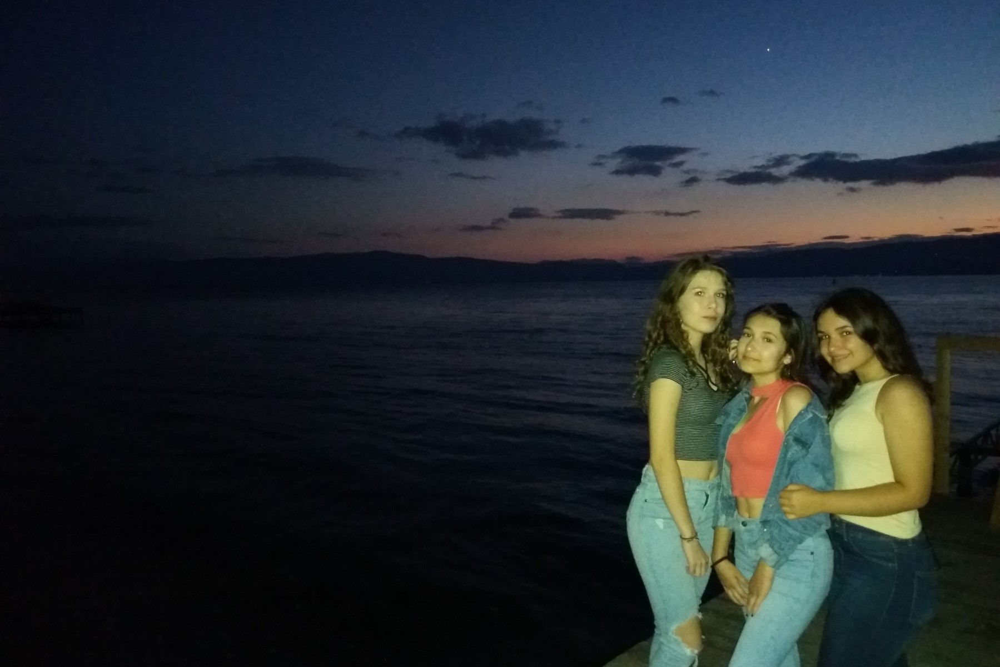
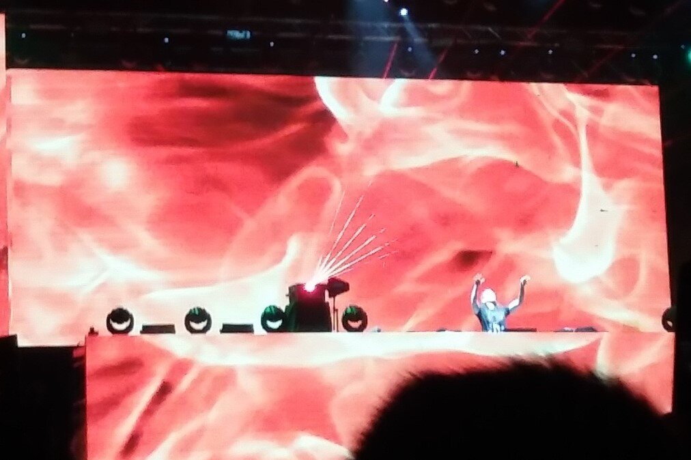
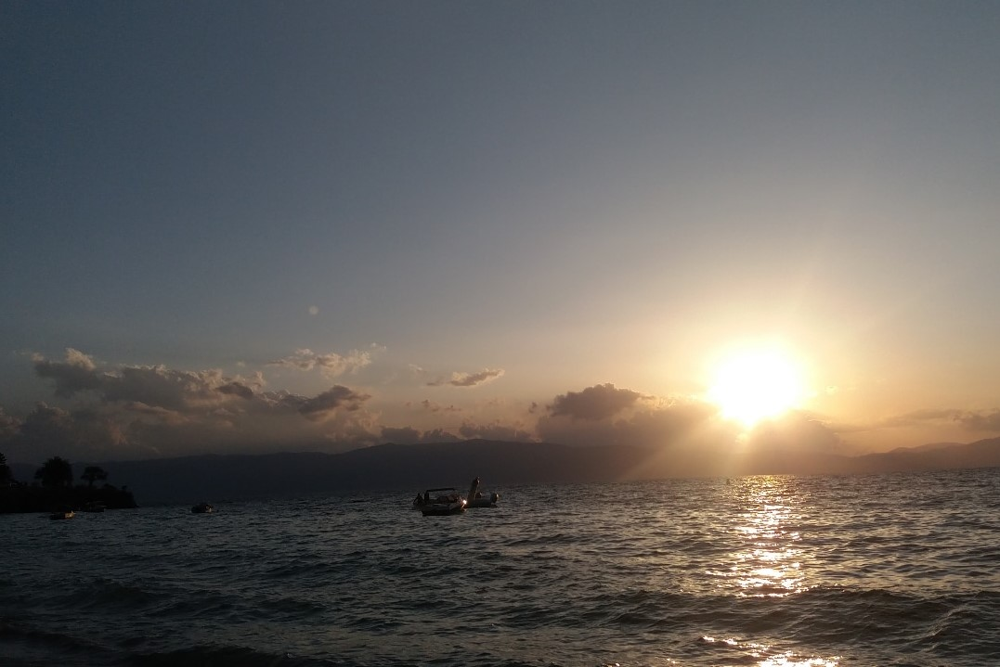

Ohrid, Macedonia
As any other teenager living in Macedonia, I have also visited in Ohrid, which is the largest city on Lake Ohrid.
Ohrid is known for once having 365 churches, one for each day of the year, and has been referred to as a "Jerusalem of the Balkans".
The city is rich in picturesque houses and monuments, and tourism is predominant. Ohrid is one of only 28 sites that are part of UNESCO's World Heritage that are Cultural as well as Natural sites.
I have visited Ohrid more times that I can count starting from a very small age. But the most fun visits were the ones with my friends, so
enjoy this image gallery of Ohrid and Krango through the years.




